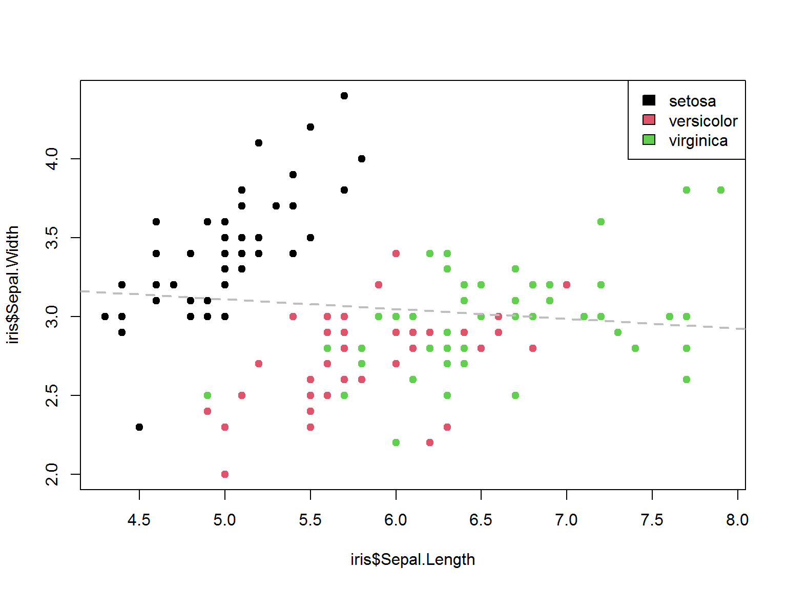
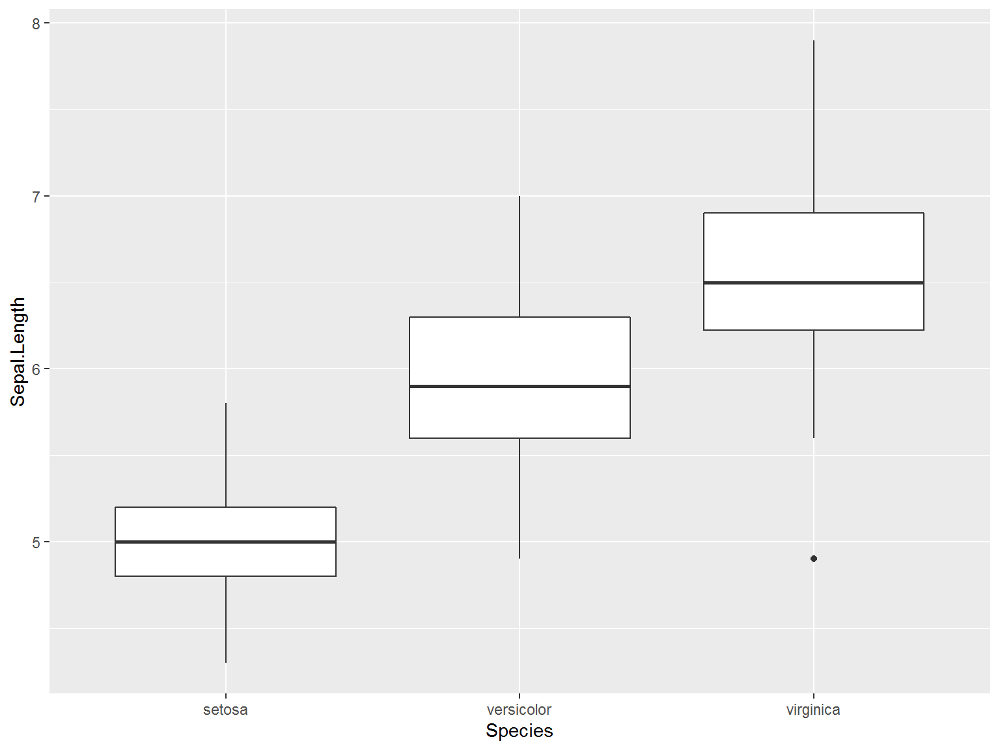
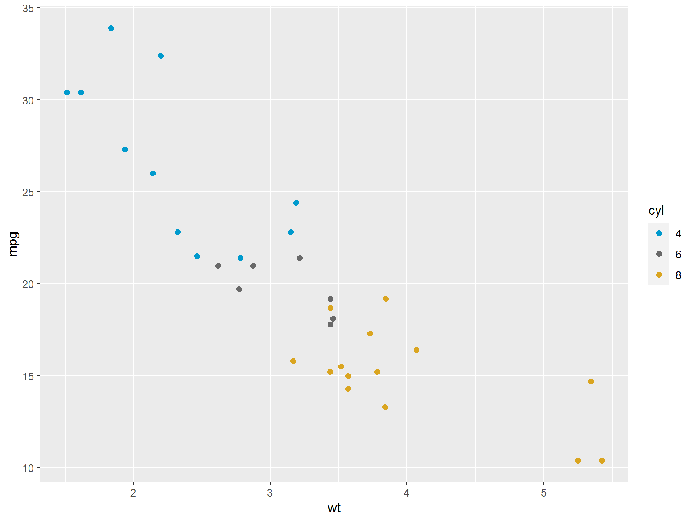

Data Visualization
Team Algoritma
Why Should We Learn Data Visualization?
Can you get the idea of this data?
| mpg | cyl | disp | hp | drat | wt | qsec | vs | am | gear | carb | model |
|---|---|---|---|---|---|---|---|---|---|---|---|
| 21.0 | 6 | 160 | 110 | 3.90 | 2.620 | 16.46 | 0 | 1 | 4 | 4 | Mazda RX4 |
| 21.0 | 6 | 160 | 110 | 3.90 | 2.875 | 17.02 | 0 | 1 | 4 | 4 | Mazda RX4 Wag |
| 22.8 | 4 | 108 | 93 | 3.85 | 2.320 | 18.61 | 1 | 1 | 4 | 1 | Datsun 710 |
| 21.4 | 6 | 258 | 110 | 3.08 | 3.215 | 19.44 | 1 | 0 | 3 | 1 | Hornet 4 Drive |
| 18.7 | 8 | 360 | 175 | 3.15 | 3.440 | 17.02 | 0 | 0 | 3 | 2 | Hornet Sportabout |
How about now?
Visualization is crucial to communicate result
The Goal of Visualization
- Exploratory
to uncover data
to analyze data
- Explanatory
to communicate data
to present data
Data Visualization in R
The Workflow
- Start with Business Question
- Prepare the data
- Visualize your data
Base & Statistical Plotting
plot() knows how to pick sensible defaults based on the input vector it was given.
Add col to distinct the categorical values, and abline to add straight line in your plot:
plot(iris$Sepal.Length, iris$Sepal.Width,col = iris$Species,pch = 19)
abline(lm(iris$Sepal.Width~iris$Sepal.Length), col = "grey", lty = 2, lwd = 2)
legend("topright",legend = unique(iris$Species),fill = 1:3)
Use hist to create histogram:
R’s base plot graphical parameters reference:
Grammar of Graphics in R: ggplot2

ggplot2, plots may be created using qplot() where arguments and defaults are handled similarly to the base plotting system, or through ggplot() where user can add or alter plot components layer-by-layer with a high level of modularity:
1. Create the Canvas
2. Add a geometrical element

3. Add another geom element
4. Add chart furniture
Data Visualization:
Basic Principles
Which chart type should I use?
This is a frequently asked question, and the best answer is:
Experiment with different charts, to see which works best to liberate the story in your data.
Although it is far from comprehensive, and makes some specific chart suggestions that I would not personally endorse, this “chart of charts” provides a useful framework by providing four answers to the question:
“What would you like to show?”
Using chart furniture, minimizing chart junk, highlighting the story
- Title and subtitle These provide context for the chart.
- Coordinate system For most charts, this is provided by the horizontal and vertical axes, giving a cartesian system defined by X and Y coordinates.
- Scale Labeled tick marks and grid lines can help your audience read data values.
- Labels Think about other labels that may be necessary to explain the message of your graphic.
- Legend If you use color or shape to encode data, you will often need a legend to explain this encoding.
- Source information Usually given as a footnote. Don’t forget this!
Using color effectively
- When encoding data with color, take care to fit the color scheme to your data, and the story you’re aiming to tell. Color is often used to encode the values of categorical data. Here you want to use “qualitative” color schemes, where the aim is to pick colors that will be maximally distinctive:
- When using color to encode continuous data, it usually makes sense to use increasing intensity to indicate larger values. These are called “sequential” color schemes:
- In some circumstances, you may have data that has positive and negative values, or which highlights deviation from a central value. Here, you should use a “diverging” color scheme, which will usually have two colors reasonably well separated, and cycle through a neutral color in the middle:
ggplot:
Features
Labelling
Facetting
Text to Plot
Complete References:
Colors & Themes
Change colors by group
Change colors manually
In ggplot2, color and fill are mapped separately. color refers to point and line color, whereas fill refers to bar fill (i.e. inner color), density fill, etc.
A custom color palettes can be specified using the functions :
scale_fill_*/scale_color_*

Adjusting Colors
A color can be specified either by name (e.g.: “red”) or by hexadecimal code (e.g. : “#FF1234”).
R colors can be viewed with colors().
Predefined Themes
ggplot2 provides some built-in themes, accessed with theme_*
The functions can take the two arguments: base_size & base_family
or, you can also download another libraries, such as:
Customizing Theme Appearance

The function theme() is used to control non-data parts of the graph including :
- Line elements : axis lines, minor/major grid lines, plot panel border, etc.
- Text elements : plot title, axis titles, legend title and text, axis tick mark labels, etc.
- Rectangle elements : plot background, panel background, legend background, etc.
There is a specific function to modify each of these three elements:
- element_line() to modify the line elements of the theme
- element_text() to modify the text elements
- element_rect() to change the appearance of the rectangle elements
- element_blank()to remove each of the elements
Plot with fully customized theme:
source("image/algoritma.R")
plot2 + labs(title = "Light-weighted Cars Tend to Consume More Fuel", subtitle = "As revealed by the road tests",caption = "Source: 1974 Motor Trend US magazine", x = "Weight (1000 lbs)", y = "Miles/(US) gallon")+
theme_algoritma_dark(base_size=10)+
scale_color_algoritma_dark()